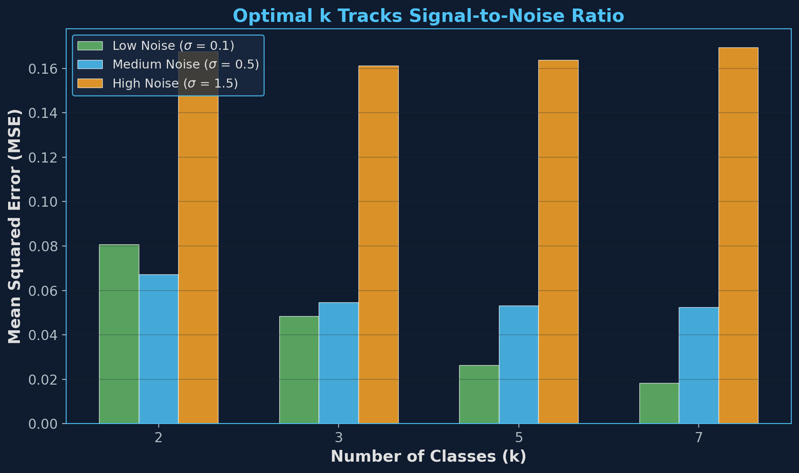
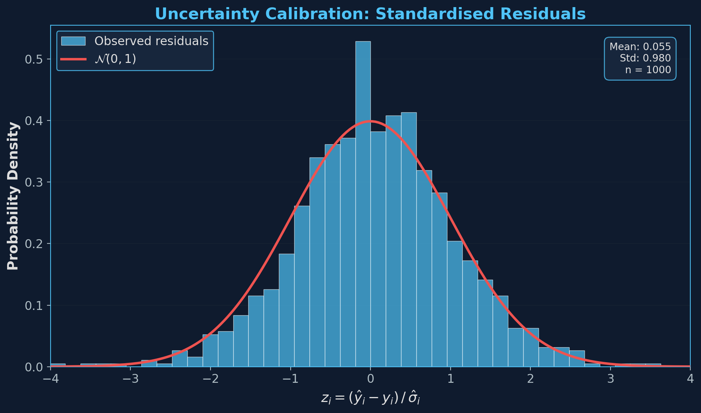
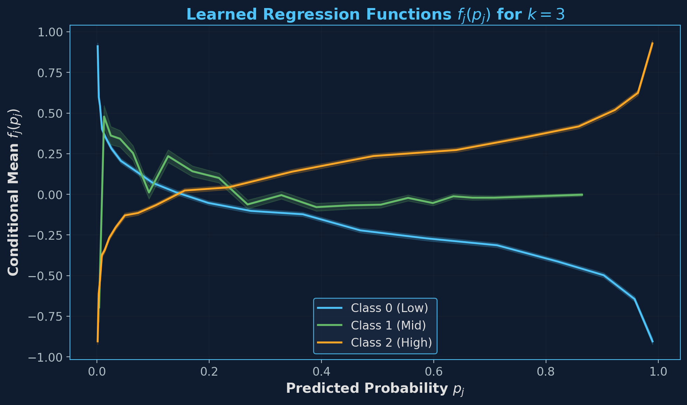

Bridging Classification and Regression for Robust Uncertainty Quantification
Farhan Feroz
Senior Research Associate Application — Alan Turing Institute
Standard regression minimises squared error — producing point estimates only, with no uncertainty.
Partition target space into k classes via quantiles:
Train a classifier for class probabilities:
Each head maps probability to Gaussian params:
This decomposition is exact under the mixture model — not an approximation. Provides calibrated prediction intervals: ŷ ± z · σ
The number of classes k is an interpretable hyperparameter controlling the precision–robustness trade-off.
| Regime | k | Behaviour | Intuition |
|---|---|---|---|
| High noise (low SNR) | k = 2 | Binary: above/below median | Easiest classification, most robust |
| Medium noise | k = 3–5 | Moderate resolution | Balanced |
| Low noise (high SNR) | k → ∞ | Approaches pure regression | Each bin ≈ 1 value |
Lcls → good class assignments | Lreg → accurate predictions & calibrated σ²

At high noise, small k wins. At low noise, large k wins.

Standardised residuals zi = (ŷi − yi) / σ̂i
closely match 𝒩(0,1) — uncertainty is well-calibrated

Each head fj(pj) learns a distinct
mapping from class probability to conditional mean
Can we learn k from data rather than treat it as a hyperparameter? — a differentiable architecture search problem.